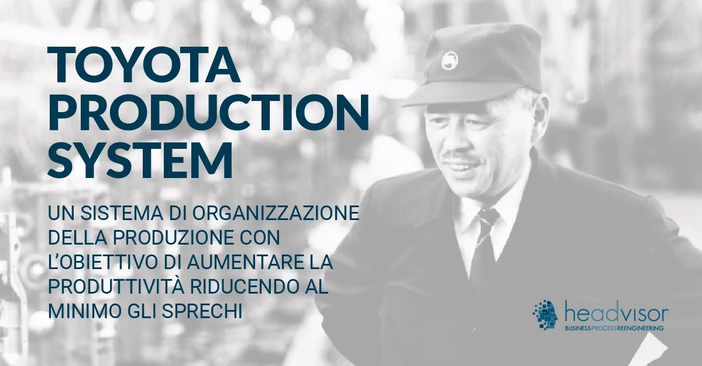
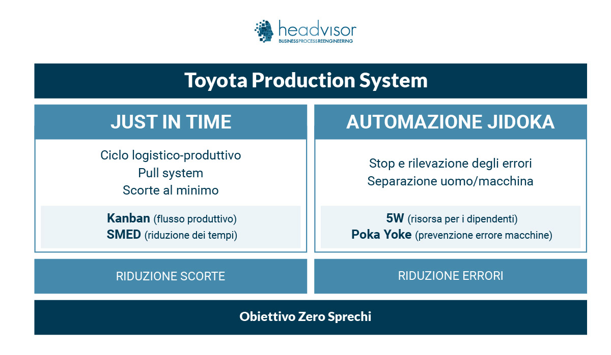
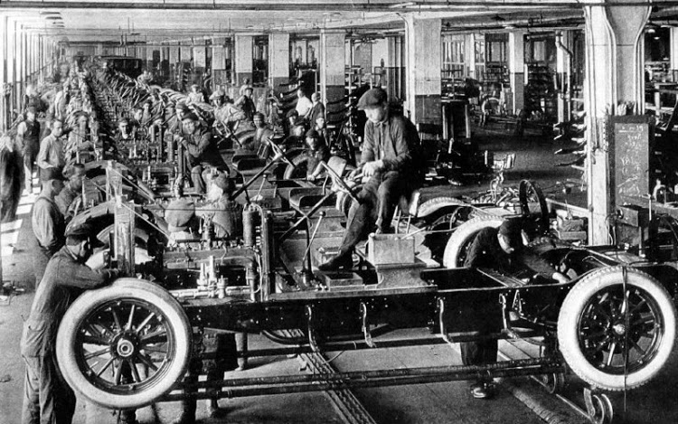

Indice
TPS Toyota Production System - Taiichi Ohno
Il Toyota Production System (T.P.S.) è un sistema di organizzazione della produzione che venne a formarsi nell'azienda giapponese fondata dalla famiglia Toyoda, la Toyota Motor Company. Il nome della società era stato trasformato da Toyoda in Toyota per motivi scaramantici, potendosi quest'ultimo scrivere, in giapponese, con otto colpi di pennello (l'8 è considerato un numero fortunato in Giappone).
Le origini della famosa multinazionale giapponese, oggi Toyota Motor Corporation, iniziarono nel 1933, quando la Toyota Utomatic Loom, società produttrice di telai tessili fondata da Sakichi Toyoda (detto il "re degli inventori giapponesi") nel 1890, aprì una divisione destinata alla produzione delle automobili diretta poi dal figlio Kiichiro Toyoda.
La divisione venne tramutata in una società indipendente nel 1937, la Toyota Motor Company. Ciò fu anche il risultato della pressione del governo giapponese, che spinse affinché la società si specializzasse nella produzione di autocarri per l'Esercito imperiale giapponese durante la Seconda Guerra Mondiale.

Toyota nel dopoguerra
Il contesto socio economico post-guerra rese inapplicabile il modello produttivo fordista occidentale in Toyota. La mancanza di capitali che caratterizzava l'economia giapponese e gli elevati costi di produzione, in particolare delle materie prime, non consentivano infatti di creare, come accadeva in occidente, economie di scala che portassero ad un abbattimento dei costi unitari.
Taiichi Ohno
Solo grazie all'intuzione di Taiichi Ohno, allora diretore generale, che Toyota fece il salto di qualità. Tahiichi Ohno, nato nel 1912, dedicò quasi tutta parte della sua vita lavorativa al servizio della famiglia Toyoda, inizialmente come impiegato nella società produttrice di telai.
Spostato nel 1939 al ramo automobilistico in cui fece carriera fino a diventare membro del consiglio esecutivo della Compagnia, Taiichi Ohno si rese conto presto che era necessario cambiare il metodo produttivo slegandosi dal principio fordista basato sulla produzione di massa.
Taiichi Ohno fece diversi viaggi in Usa, con l'obiettivo di studiare il modello fordista e rimase negativamente stupito in particolare da come la Ford Motor Company aveva organizzato la catena di montaggio, a suo avviso pieno di "MUDA" (sprechi).
Rimase invece particolarmente colpito dal modello di una catena di negozi, i Piggly Wiggy, caratterizzati da un particolare modo di allestire un percorso obbligato lungo il quale dei prodotti posti sulle mensole potevano essere prelevati e poi pagati all'uscita.
Tahiichi Ohno pensò di trasporre tale principio in Toyota, regolando quindi il tasso di produzione in base all'andamento della domanda, un principio contrapposto al fordismo, caratterizzato da una produzione di massa concentrata sullo stimolo dell'offerta. Come nacque quindi il Toyotismo (TPS Toyota Production System)?
I Principi del Toyota Production System TPS
Il principio base di Taiichi Ohno è che la sovrapproduzione è la madre di tutti i MUDA (gli sprechi).
L'obiettivo è quello quindi di aumentare la produttività riducendo al minimo i MUDA (gli sprechi).

I due pilastri del Toyota Production System TPS sono il Just in time e l'autonomazione.
L'applicazione dei principi Lean Production
Con il termine Lean Production o Lean Manufacturing si intende l'insieme di metodi e strumenti che permettono all'azienda di raggiungere l'eccellenza operativa. Progettare e mantenere una organizzazione efficiente che consenta di produrre al meglio massimizzando le risorse.
Lean Production ha come scopo principale quello di eliminare gli sprechi creando valore per il mercato.
Pull (Kanban)
I Kanban sono cartellini di segnalazione (cartacei o ellettronici) indicanti un articolo e poche altre informazioni, che esprimono una richiesta tra una postazione di lavoro e la sua precedente. Il cartellino kanban, spostandosi lungo il processo, determina il flusso produttivo “ordinando” le lavorazioni tramite una logica Pull, chiamando cioè da valle le lavorazioni necessarie in base ai bisogni del momento.
Ogni cartellino Kanban deve riportare i seguenti dati minimi:
- Numero del cartellino
- Codice del materiale
- Descrizione del materiale
- Posizione a magazzino
- Centro di lavoro di impiego
- Fase di lavorazione
- Il numero di codice della parte da produrre
- La capacità del contenitore
- Il numero del centro fornitore
- E tutte le informazioni di processo che possono servire alla produzione
MUDA
MUDA che in giapponese aveva come traduzione il termine “disonore”, trova oggi nella traduzione occidentale il termine di spreco, inutilità, futilità. Gli sprechi (MUDA) sono un problema per l'azienda perché non aggiungono valore al prodotto: il valore viene deciso dal cliente, che è disposto a pagare di più per un prodotto di valore maggiore e non certo per costi produttivi di inefficienza o spreco appunto.
Ogni attività che non aggiunga valore ad un prodotto è quindi uno spreco e aumenta i costi al processo produttivo (NVA - Not Value Added).
Per quanto appena detto, una delle attività fondamentali per efficientare l'azienda di produzione è quello di essere in grado di correggere gli sprechi (MUDA) eliminandoli totalmente o quantomeno diminuirli.
Just in time
Il Jit, Just-in-Time rappresenta il primo dei 2 pilastri del modello TPS Toyota Product System Il Just-In-Time (JIT) è un metodo logistico-produttivo finalizzato all'eliminazione degli stock e delle giacenze di materiale in magazzino.
Il principio del Just in Time in ambito Supply Chain management è quello di produrre e quindi acquistare solo lo stretto necessario al raggiungimento e soddisfazione della domanda del cliente. In questo modo nel lancio di produzione si pianificheranno solo i lotti necessari alla produzione per la vendita e non alla produzione di scorte per magazzino. Si riducono in questo modo i lotti di produzione e anche i tempi totali di attraversamento della produzione.
Jidoka
Il concetto di " Jidoka" è stato definito nel TPS Toyota Product System come “automazione con un tocco umano” e implica la presenza contemporanea di operatori intelligenti e formati e di macchine in grado di bloccarsi al minimo segnale di criticità perché vengano prese le apposite contromisure.
Alcuni analisti hanno deciso di coniare un nuovo termine per riferirsi al Jidoka, il neologismo “autonomazione”. Con questa espressione si definisce il controllo umano sulla macchina, che consente di fermare gli automatismi quando si è in presenza di problemi minimizzandone gli sprechi e correggendo in tempo reale i difetti produttivi.
Il sistema Jidoka prevede che ogni pezzo prodotto dalla produzione sia garantito per qualità al 100%. Al fine di ottenere questo eccellente risultato si deve controllare ogni fase della produzione. In caso di esito negativo al controllo di qualità, l'impianto deve immediatamente sospendersi al fine di correggere il problema e tornare a garantire la massima qualità.
Kaizen
Kaizen è un atteggiamento, una filosofia. Nella parola Kaizen è contenuto il vero significato del pensiero della Lean Production, ovvero il Miglioramento Continuo, l'attitudine all'individuare i comportamenti e i metodi che possono migliorare la qualità del prodotto, la qualità del lavoro, la sicurezza e attivando uno stato mentale fortemente proattivo al bene comune.
La ricerca della perfezione accompagna i lavoratori che sono critici prima di tutto verso sé stessi. Non temono di mettersi in discussione, ascoltare i suggerimenti o ricercare forme di evoluzione comune.
Questo approccio al lavoro trasforma l'ambiente lavorativo in un contesto di forte miglioramento dove tutti partecipano proattivamente a questa progressiva trasformazione. Il miglioramento continuo appunto.
Applicare il Kaizen non richiede grandi investimenti di risorse o tempo, al contrario ha costi bassissimi, è la vera trasformazione che deriva dalla cultura e dall'insegnamento di leader.
Differenza tra Taylorismo e Fordismo

Il Fordismo e il Taylorismo sono due teorie di gestione della produzione industriale sviluppate rispettivamente da Henry Ford e Frederick Winslow Taylor. Entrambe le teorie cercano di aumentare l'efficienza della produzione, ma lo fanno in modi diversi.
Taylorismo
Il Taylorismo, noto anche come "gestione scientifica", si concentra sulla razionalizzazione del lavoro individuale. Taylor ha studiato i movimenti dei lavoratori in un'attività specifica per trovare il modo più efficiente di eseguire quel compito. Questo approccio ha portato alla standardizzazione dei compiti e alla divisione del lavoro in compiti più piccoli e gestibili.
Caratteristiche principali del Taylorismo:
- Divisione del lavoro
- Standardizzazione dei compiti
- Pagamento a pezzo
Fordismo
Il Fordismo, d'altra parte, si concentra sulla produzione di massa e sulla standardizzazione dei prodotti. Ford ha introdotto la linea di montaggio mobile, che ha permesso una produzione più efficiente su larga scala. Invece di avere un lavoratore che esegue molteplici compiti, ogni lavoratore esegue un singolo compito lungo la linea di montaggio.
Caratteristiche principali del Fordismo:
- Produzione di massa
- Standardizzazione dei prodotti
- Lavoro a catena
Aziende che hanno adottato il Lean Manufacturing
Tante aziende hanno adottato il Lean Manufacturing con il Supply Chain Management per migliorare le loro operazioni e rimanere competitive nei rispettivi settori industriali. Vogliamo fare qualche esempio?
Ci sono 7 aziende italiane dove l'integrazione tra Lean Manufacturing e Supply Chain Management ha permesso di creare un ambiente in cui la produzione e l'approvvigionamento lavorano in sinergia per raggiungere i risultati elencati sopra.
- Ferrero
- Barilla
- Luxottica
- Came Group
- CNH Industrial
- Alfa Romeo Aviation
- Pirelli
Fonti
- bravomanufacturing.it
- Chatgpt
- headvisor.it
- Wikipedia